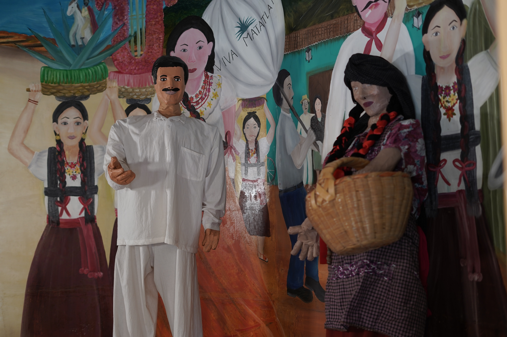
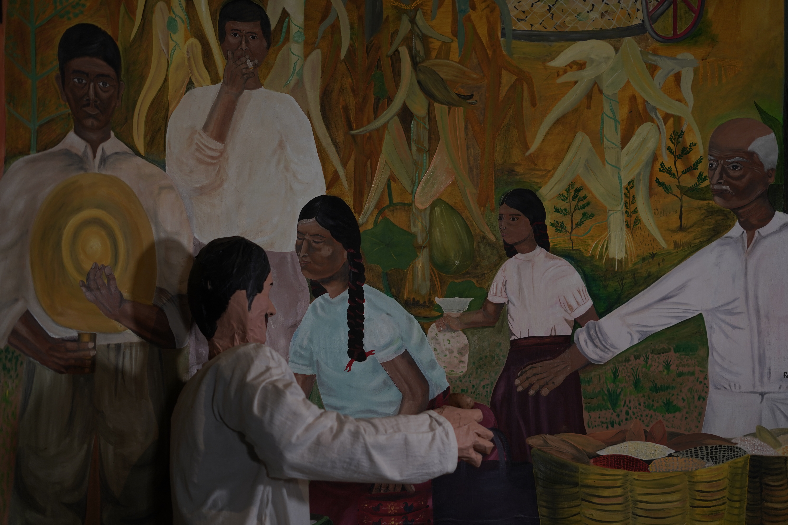
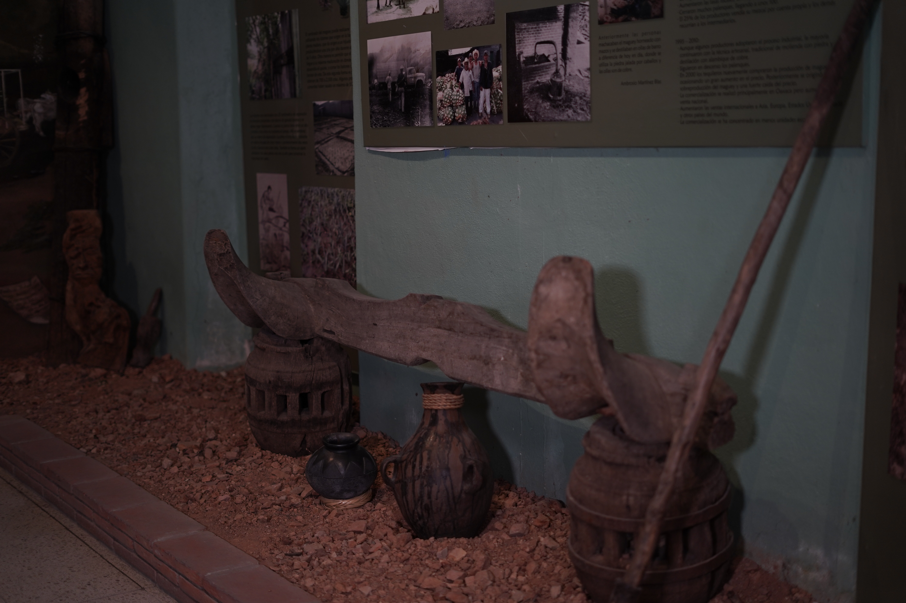
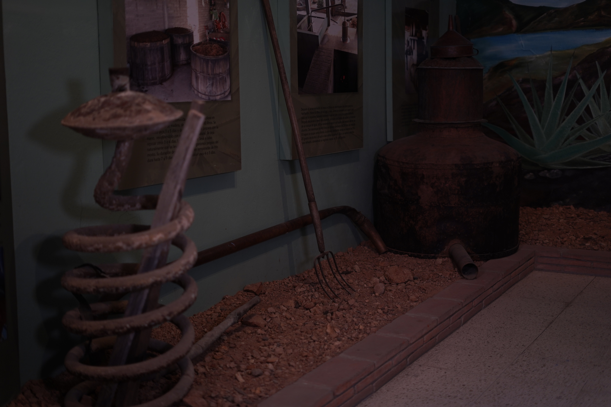

Santiago Matatlán es reconocido como la capital mundial del mezcal. El mezcal es fundamental en su vida económica y ceremonial, utilizado en eventos y rituales. Aunque enfrenta la problemática de la adulteración, la producción se ha regulado y se busca mejorar las ventas. El proceso de cultivo del maguey, la molienda y la maduración del mezcal son parte integral de su tradición artesanal.